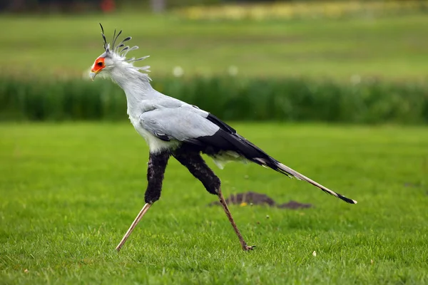

Sagittarius serpentarius
El secretario (Sagittarius serpentarius) esta ave es una especie de ave accipitriforme y pertenece a la familia de Sagittariidae, siendo la unica de su genero (Sagittarius) y de su familia (Sagittariidae). or su peculiar librea, gris y con las patas negras, y con un copete de plumas como llevaban los secretarios británicos de hace siglos. Está ampliamente extendido en África al sur del Sahara. Habita las sabanas africanas desde Somalia hasta Senegal y de Kenia a Sudáfrica.

Es una de las rapaces más características de toda la fauna africana.
Es de gran tamaño, aproximadamente un metro de alzada y de hábitos
semiterrestres. Se distingue del resto de rapaces por cazar en el
suelo y no desde el aire. Recorre a zancadas los herbazales al acecho
de presas que van desde saltamontes a culebras y mamíferos de pequeño
tamaño,a los que ataca golpeándolos con sus largas patas, provistas
de cortos dedos y fuertes garras afiladas.
A diferencia de la mayoría de aves de presa, el pájaro secretario
es en gran medida un animal terrestre, que caza sus presas a pie.
Los adultos cazan en parejas y a veces en bandos familiares sueltos,
acechando a través del hábitat con largas zancadas. Las presas pueden
ser insectos como langostas y escarabajos, mamíferos que van desde
el ratón hasta la liebres y la mangosta, cangrejos, lagartos,
serpientes, tortugas, pequeños pájaros, huevos de pájaros y, a veces,
animales muertos en incendios de pastos o matorrales. Los herbívoros
más grandes no suelen ser cazados, aunque hay algunos informes de aves
secretas que matan a jóvenes gacelas y cachorros de guepardo.
La importancia de las serpientes en la dieta ha sido exagerada en el pasado,
aunque pueden ser localmente importantes y las especies venenosas como adders
y cobras se encuentran regularmente entre los tipos de serpientes depredadas.
Las aves secretas no comen carroña.
Las aves suelen expulsar a sus presas de la hierba alta pisoteando
la vegetación circundante. Sus plumas de la cresta pueden levantars
durante la caza, lo que puede servir para ayudar a asustar al objetivo
y proporcionar sombra para la cara. El ave persigue a la presa con las
alas extendidas y mata golpeando con rápidos golpes de las patas.
Sólo con presas pequeñas, como las avispas, el ave utilizará su pico
para cogerlas directamente. Hay algunos informes que indican que,
al capturar serpientes, el ave secretaria levanta el vuelo con su presa
y luego la deja caer hacia su muerte, aunque esto no se ha verificado.
Incluso con presas más grandes, la comida suele tragarse entera a través
de la considerable abertura de las aves. Ocasionalmente, al igual que
otras rapaces, sujetan un alimento con las patas mientras lo desgarran con el pico.